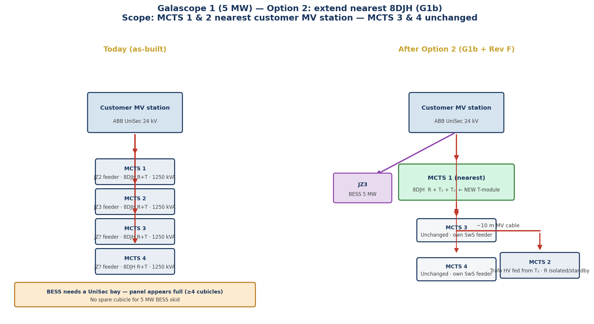
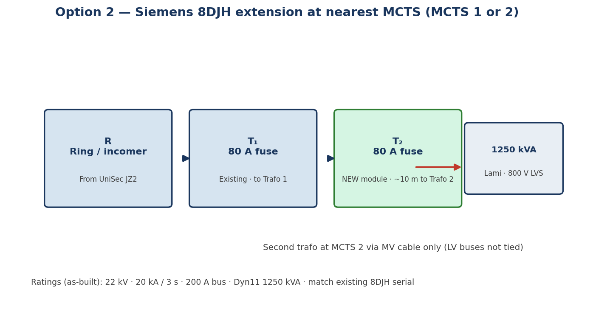
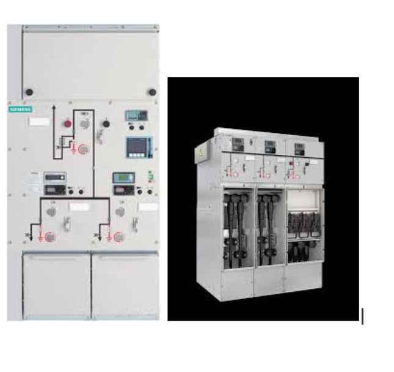
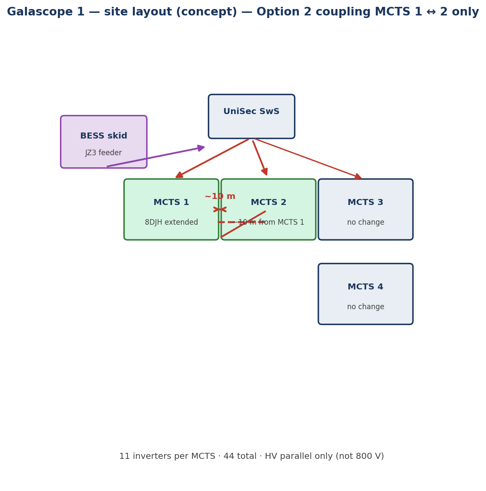
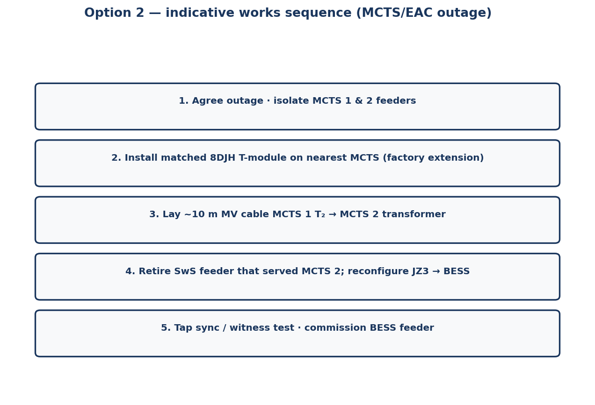
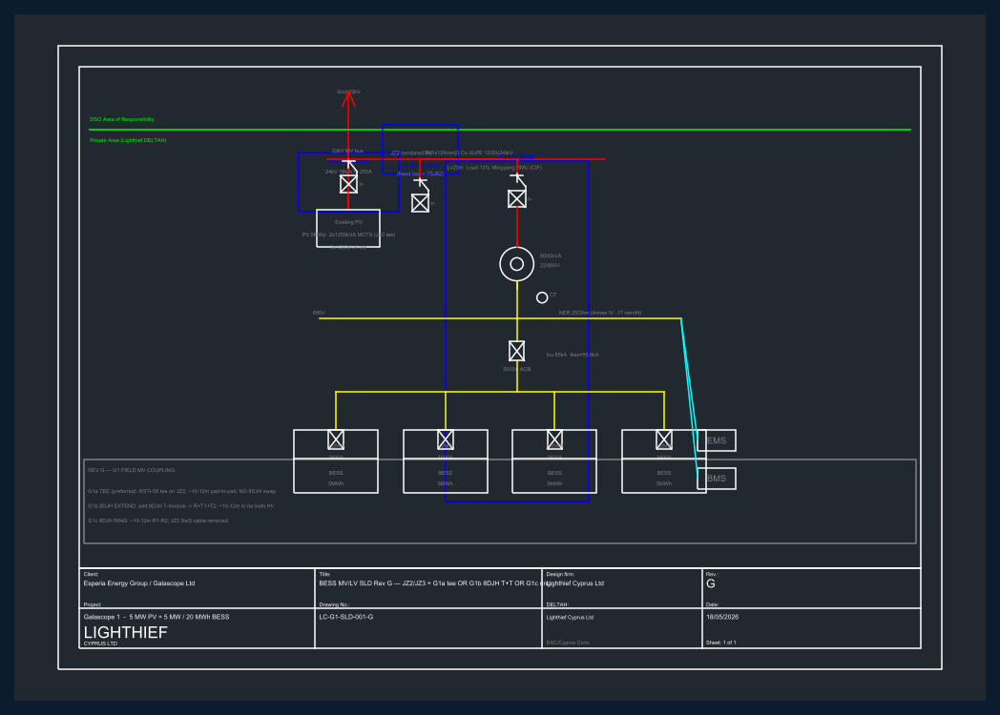
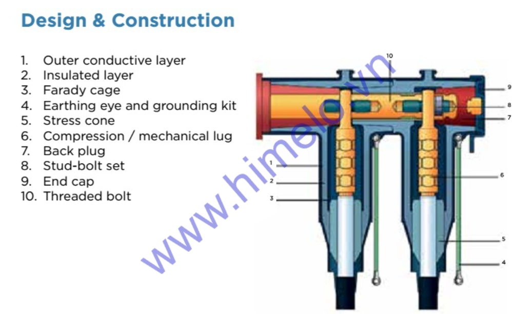

Summary
| Item | Detail |
|---|---|
| Park | Galascope 1 — 5 MW PV (44 inverters) + 5 MW / 20 MWh BESS (T4 MV skid) |
| As-built SwS | ABB UniSec 24 kV, 16 kA/1 s, 200 A — four functional cubicles |
| Field plant | Four MCTS buildings (MCTS 1–4), each 1250 kVA + 8DJH R+T |
| This option scope | MCTS 1 & 2 only (~10 m apart, nearest SwS) — MCTS 3 & 4 unchanged |
| What we add | NEW One matched 8DJH T-unit (80 A fuse) + ~10 m MV cable between pads |
| What we free | One UniSec bay (e.g. JZ3) → dedicated BESS 22 kV feeder to T4 skid |
| What stays separate | 800 V LV on each transformer — no LV paralleling with BESS (690 V skid) |
MCTS / EAC approval required before construction — parallel operation of two 1250 kVA units on one MV feeder, tap settings, and protection grading must be witnessed.
Figure 1 — Before and after (MV station & nearest transformers)

Figure 2 — 8DJH module lineup (nearest MCTS)
Option 2 uses the same switchgear family already on site. The nearest MCTS is extended from R + T to R + T₁ + T₂ on one gas-insulated busbar.


Supplier specification (copy to RFQ)
- Product: Siemens 8DJH extension T-module
- Rating: 24 kV, 80 A fuse-switch, compatible with existing 20 kA / 3 s bus
- Configuration: R + T₁ + T₂ on existing MCTS at Galascope 1
- Second outgoing: ~10 m MV cable to adjacent 1250 kVA (MCTS 2) HV terminals
Not Option 2: outdoor screened T-connectors alone (cable tee kit) — that is Option 1. Option 2 keeps branching inside the 8DJH building.
Figure 3 — Site layout (concept)

Figure 4 — Indicative works sequence

Issued engineering drawing (full single-line)
Formal SLD with Rev F SwS + Rev G options (including G1b) — for EAC / MCTS submission:
- LC-G1-SLD-001-G (Cypriot symbols) —
../sld/rev-G/LC-G1-SLD-001-G_Cypriot.png - LC-G1-SLD-001-G-IEC —
../sld/rev-G/LC-G1-SLD-001-G-IEC.png

Option comparison (field coupling)
| Option 1 — Outdoor tee | Option 2 — 8DJH extension (this pack) | |
|---|---|---|
| Change at MCTS | None | Add T-module on nearest 8DJH |
| Civil | Tee pit + ~10 m cable | Factory module + ~10 m cable |
| Lead time | Short | Weeks (matched 8DJH) |
| When to choose | Lowest switchgear touch | MCTS prefers metal-clad branching |

Contact
Alexander Papacosta — Cyprus Director
Lighthief Cyprus Ltd · HE 477423
office@lighthief.com · +357 99 164 158
solarfarms.cy